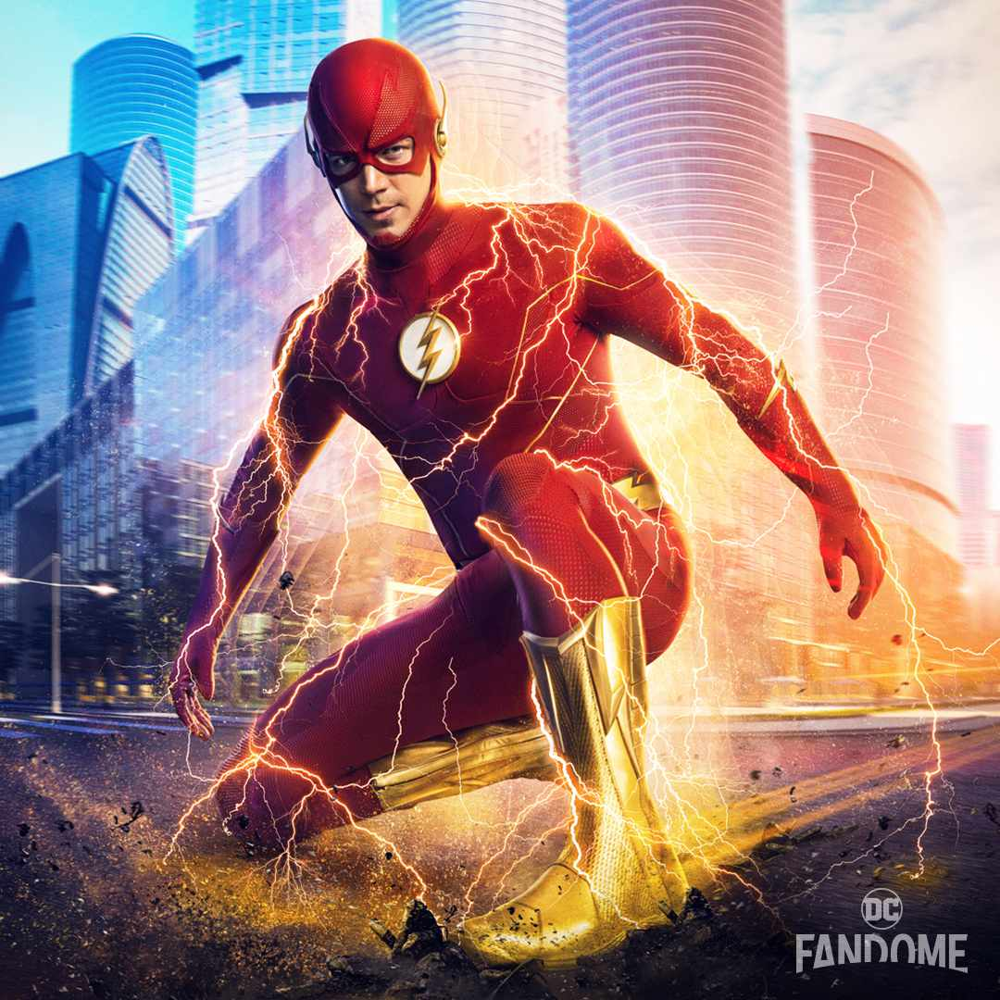

Barry Allen's life changed dramatically at age 11 when his mother died and his father was wrongfully convicted. Then Detective Joe West took him in, years later barry was struck by lightning during an accident with a particle accelerator which gave him superspeed. Determined to stop those who abuse their powers, he protects the innocent while solving the mystery of his mother's death.

Main Actors:
- Grant Gustin Barry Allen/The Flash.
- Candice Patton as Iris West-Allen.
- Danielle Panabaker as Caitlin Snow.
- Carlos Valdes as Cisco Ramon.
- Tom Cavanagh as Harrison Wells.
- Jesse L. Martin as Joe West.
Production Studio:
- Warner Bros. Television.
- DC Entertainment.
- Berlanti Productions.
Seasons Rankings:
- Season 1
- Season 3
- Season 2
- Season 5
- Season 4
- Season 6
- Season 9
- Season 7
- Season 8
I think the first 5 seasons of the flash were amazing expecially when the reverse-flash got involved but anything after season 5 was just a let down. I don't think the show was meant to last that long and because fans kept asking for more after season 5 the writers started just doing whatever, I think thats the reason the show went of the rails. My favorite episode are the ones when he had crossovers with CW ARROW, CW SUPERGIRL, CW LEGENDS, and CW BATWOMAN.